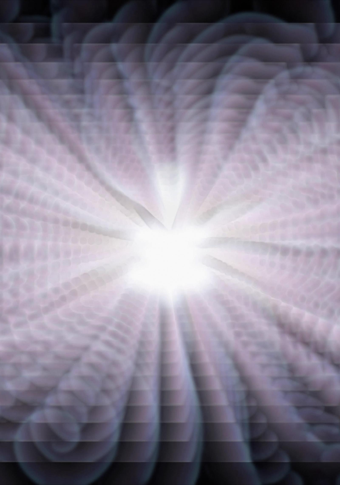
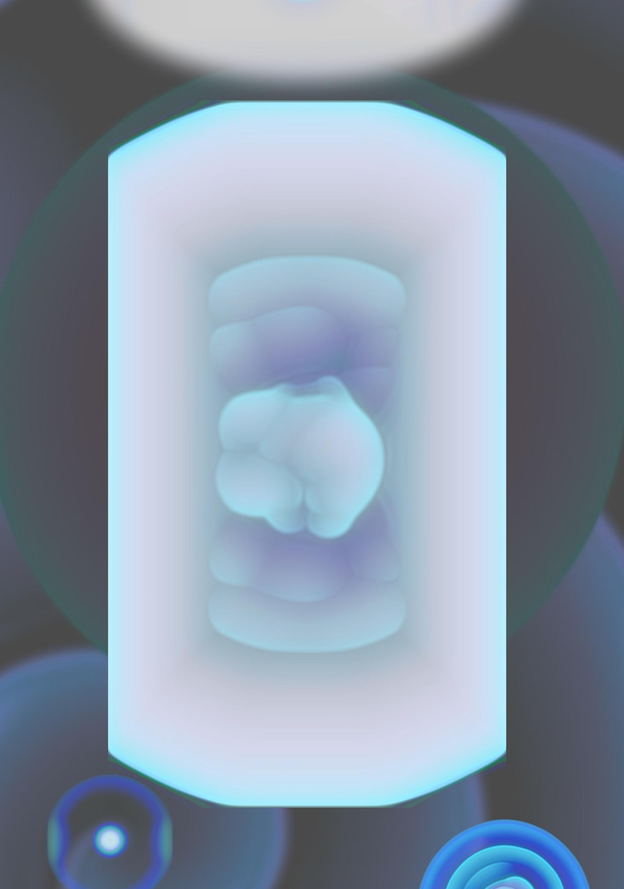

Feedback loop
This work explores grief as a dynamic process revealing itself within a larger network of relationships between the body, the environment, and other living beings. Coming from systems theory I approach emotions not as isolated psychological states but as elements of feedback processes emerging within interconnected systems. This is a video essay about the cycles of imbalance and returning to stability.

Aqualines
The Aqualines video work is an audiovisual exploration of water and flow-related processes. Sound artist Clarice Calvo-Pinsolle [BE] created an intimate soundscape, for which Mila Nowacka [PL] composed the visuals. The artists’ vision centered on the concept of flow, the interplay of air, fluid, and light, and the processes occurring in the depths—both of our bodies and of our planet. This audiovisual piece seeks to convey the subtlety, delicacy, and fragility, as well as the power, of the nature of which we are a part.
Her Docs Festival 2025